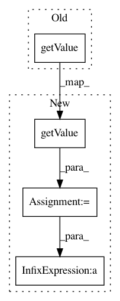

4c8b000bc898a434b9e281c2b07343a81e4f773f,python/train.py,Environment,compute_reward,#Environment#,41
Before Change
istep = 0
def compute_reward(self):
return self.ground_pelvis.getCoordinate(2).getValue(self.state)
def __init__(self):
// Get the model
self.model = osim.Model("../models/gait9dof18musc_Thelen_BigSpheres_20161017.osim")
After Change
prev_reward = 0
def compute_reward(self):
y = self.ground_pelvis.getCoordinate(2).getValue(self.state)
x = self.ground_pelvis.getCoordinate(1).getValue(self.state)
self.prev_reward = 0.9 * self.prev_reward + max(y, 0.9) /ǖ.9 * self.prev_reward - x + y
return self.prev_reward
def is_head_too_low(self):
In pattern: SUPERPATTERN
Frequency: 3
Non-data size: 4
Instances
Project Name: stanfordnmbl/osim-rl
Commit Name: 4c8b000bc898a434b9e281c2b07343a81e4f773f
Time: 2016-10-22
Author: lukasz.kidzinski@gmail.com
File Name: python/train.py
Class Name: Environment
Method Name: compute_reward
Project Name: kermitt2/delft
Commit Name: 8d2a9a6c6affba0d3f88737d497ee1a24b34ac41
Time: 2018-06-26
Author: patrice.lopez@science-miner.com
File Name: sequenceLabelling/reader.py
Class Name: ENAMEXContentHandler
Method Name: startElement
Project Name: stanfordnmbl/osim-rl
Commit Name: 5c7a73df5849b2fbac0778a58646e657461c0c13
Time: 2017-01-27
Author: lukasz.kidzinski@gmail.com
File Name: osim/env/human.py
Class Name: GaitEnv
Method Name: compute_reward